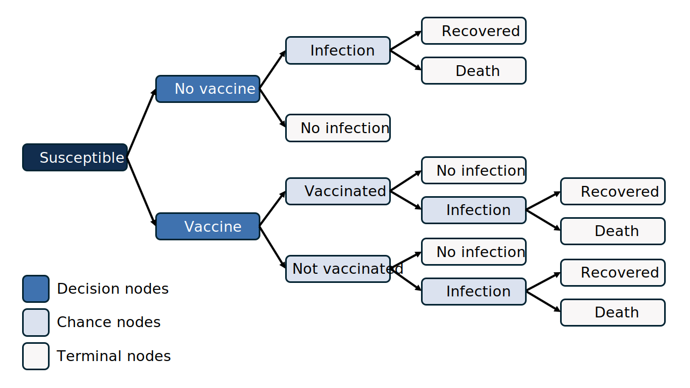
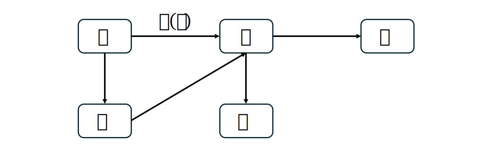

Modelling interventions and health economics
Summary from the MIDSEA Summer School 2024
Interventions that can be modelled (Jit & Brisson, 2011)
- Vaccination
- Screening
- Social distancing
- Post-exposure treatment
Vaccination
Model vaccination
To model vaccination, we need to decide 2 things:
What is the vaccine effect? Does it protect against infection, severe disease, transmission, or a combination?
How do we model imperfect protection?
Vaccine effect
Prevent infection
Vaccine prevents the pathogen from establishing an infection in the body. A vaccinated person is less likely to get infected.

Prevent infection
Assuming a perfect vaccine against infection, the model can be designed as follows:

Vaccinated people \(V\) remain uninfected in their lifetime and do not participate in disease transmission.
Prevent infection
You can simplify this model by moving susceptible people to the \(R\) compartment because they also do not participate in disease transmission.
Prevent severe disease
A vaccinated individual still get infected but experiences a much milder form of the disease.

Prevent severe disease
Assuming a perfect vaccine against severe disease, the model can be designed as follows:

Prevent transmission
A vaccinated person still get infected, still get sick, but they are less likely to spread the disease to others.
Prevent transmission
Assuming a perfect vaccine against transmission, the model can be designed as follows:
\(I\) being the only source of infection that contributes to the force of infection. Vaccinated people \(S_v\) still get infected and become \(I_v\), but they do not transmit the disease.
Imperfect protections
What is meant by a vaccine with effectiveness of 80%?
All-or-nothing model
All-or-nothing (AoN, also called the polarized (Park et al., 2023), or take) model assumes that among vaccinated individuals, a proportion \(VE_P\) are completely protected, while the remaining fraction \(1 - VE_P\) remains completely unprotected (Park et al., 2023; Zachreson et al., 2023).
An effectiveness of 80% here implies that among vaccinated people, 80% are completely protected, and 20% receive no protection (World Health Organization, 2013).
All-or-nothing model

Figure 1: All-or-nothing vaccination model (Park et al., 2023)
Leaky model
Leaky (or degree) model assumes that all vaccinated individuals are partially protected (Zachreson et al., 2023).
An effectiveness of 80% here implies that all vaccinated people have the endpoint of interest reduced by 80% compared to non-vaccinees.
Leaky model
The assumption that no vaccinated people is totally or permanently protected implies one or both of the following (World Health Organization, 2013):
- No amount (titre) of the immune marker is totally protective or, if it is, no individual can maintain that titre for a long period (because of waning or transient immunosuppression)
- The degree of protection is a function of the level of the immune marker - the simplest explanation being that protection is a function of both the level of the immune marker and the challenge dose.
Leaky model

Figure 2: Leaky vaccination model (Park et al., 2023)
Mixed effects
Imperfect vaccines often have a combination of effects: they can protect against infection, severe disease, and transmission at the same time.

Mixed effects
Assuming a vaccine with leaky effectiveness \(VE_L\) against infection and severe disease, the model can be designed as follows:

Multiple doses
Some vaccines require multiple doses. Below is the DynaMICE model (Verguet et al., 2015) for the 2-dose measles vaccine, assuming AoN effectiveness for both doses.

Other interventions
- Screening
- Social distancing
- Post-exposure treatment
What is the
vaccineintervention effect? Does it protect against infection, severe disease, transmission, or a combination?How do we model imperfect protection?
Health economics
Health economics
Health economics focuses on how to allocate healthcare resources efficiently to maximize health outcomes with limited resources (Goeree & Diaby, 2013).
Health economics is used to support decision-making in situations where we must choose between different options. For example, given the current budget, should we buy HPV vaccines or COVID-19 vaccines?
Types of analyses
Partial economic evaluations: studies that either only examine cost or consequences, or examine both costs and consequences but for only one intervention (without a comparator). This analysis cannot guide decision-making (Turner et al., 2021).
Full economic evaluations: compare both the costs and consequences of the intervention to a comparator.
Types of analyses
Full economic evaluations
There are 3 most popular types of full economic evaluations, the key difference lies in how they express the consequences (Turner et al., 2021):
| Type | Costs | Consequences |
|---|---|---|
| Cost-effectiveness | $ | A single natural unit (life-years gained, cases averted, cases detected) |
| Cost-utility | $ | QALYs, DALYs |
| Cost-benefit | $ | $ |
Models in health economics
Proportionate outcomes model
Also known as decision tree although exact definitions differ. Group flows divided into proportional outcomes over a single time period (Bishai et al., 2023).
All decision trees have 3 key components (Bishai et al., 2023):
- Decision nodes: where different comparators are compared.
- Chance nodes: where potential outcomes are weighted by their probabilities.
- Terminal nodes: endpoints of pathways, where costs and effectiveness calculated.
Proportionate outcomes model
Figure 3: Decision tree, adapted from (Bishai et al., 2023)
Proportionate outcomes model
We have to specify a fixed time horizon represents the period over which probabilities and outcomes are considered (Kuntz et al., 2013). If a decision tree uses a 50-year time horizon, the probabilities of outcomes are based on what could occur within those 50 years.
Markov model
A Markov model is a repeated decision tree (Heeg et al., 2008). The core elements of a Markov model are health states and transition (Bishai et al., 2023):
Health states represent different conditions such as being healthy, sick, disease stages, or vaccinated. States must be mutually exclusive (a person can’t be in two states at once) and exhaustive (cover all relevant conditions).
Transition is the probability (ranges between 0 and 1) of moving from one state to another.
Markov model
Markov models are used for problems that involve risk over time, or when the timing of events is important (Kuntz et al., 2013). We can use a Markov model to represent the endpoints shown in the decision tree Figure 3.
Markov model
Figure 4: Markov model, adapted from (Bishai et al., 2023)
Markov model
| S | V | I | R | D | Check | |
|---|---|---|---|---|---|---|
| Susceptible (S) | 0.198 | 0.100 | 0.700 | 0.000 | 0.002 | 1.000 |
| Vaccinated (V) | 0.000 | 0.998 | 0.000045 | 0.000 | 0.002 | 1.000 |
| Infected (I) | 0.000 | 0.000 | 0.129 | 0.865 | 0.006 | 1.000 |
| Recovered (R) | 0.000 | 0.000 | 0.000 | 0.998 | 0.002 | 1.000 |
| Deaths (D) | 0.000 | 0.000 | 0.000 | 0.000 | 1.000 | 1.000 |
Markov model
The key disadvantage of a Markov model is its memoryless property or Markov assumption, which assumes that transitions between health states depend only on the current state, not on the past history or duration spent in a state (Bishai et al., 2023).
Compartmental dynamic model
Static models (decision tree, Markov model) assumes that the force of infection is constant or changes only as a function of age and other individual characteristics.
Dynamic model assumes that the force of infection can vary throughout the course of time and as a function of population interactions. Dynamic models are preferable for modeling the impact of a vaccine when considerations of herd immunity (Bishai et al., 2023).
Compartmental dynamic model
We can adjust the Markov model Figure 4 to become a compartmental dynamic model by specifying that the force of infection varies over time.
Figure 5: Compartmental dynamic model, adapted from (Bishai et al., 2023)
Individual-based model
Individual-based model, also called microsimulation model, keeps track of each individual’s behaviour (Kim & Goldie, 2008). This is done by repeatedly sampling from probability distributions a large number of times to understand the average and spread of potential results. The disadvantage is that they are time-consuming, as they require sometimes the simulation of millions of individuals to obtain stable estimates (Bishai et al., 2023).
Individual-based model

Measuring consequences
Utility
Utility of health states are expressed on a scale from 0 to 1, where 0 represents the utility of being “dead” and 1 represents the utility of “perfect health” (Prieto & Sacristán, 2003).
QALY
The quality-adjusted life year (QALY) measure “years lived in perfect health”. One year in perfect health equals 1 QALY (1 Year \(\times\) 1 Utility = 1 QALY). A year lived in less than perfect health is worth less than 1 QALY (Prieto & Sacristán, 2003).
\[\text{QALY} = \sum_{i = 0}^{\text{lifetime}} \text{Year} \times \text{Utility}\]
For example, 0.5 years in perfect health equals 0.5 QALYs (0.5 years \(\times\) 1 Utility), the same as 1 year with a utility of 0.5 (1 year \(\times\) 0.5 Utility) (Prieto & Sacristán, 2003). The area under the curve equates to the total QALY value (Whitehead & Ali, 2010).
QALY
Asst Prof. Kiesha Prem’s lecture at MIDSEA Summer School 2024.
Measuring costs
Perspectives
Overview of the perspectives included costs (Sittimart et al., 2024).
Discounting vs inflation
Discounting is needed if a longer time horizon than 1-2 years is being considered. For most health economic evaluations, guidelines recommend a discount rate of 3% (high-income countries) to 5% (low- and middle-income countries) (Bishai et al., 2023).
Discounting is adjusting future costs and outcomes of health-care interventions to “present value” (Severens & Milne, 2004). Discounting is based on the concept of “positive time preference”, meaning that people prefers to benefit sooner rather than later (Severens & Milne, 2004).
Discounting vs inflation
Imagine you can choose between getting (A) $1000 today or (B) $1000 in 5 years. Most people prefer option A because having $1000 today allows you to use it immediately or invest it. The value of $1000 today is greater than $1000 in 5 years due to the opportunity to earn interest or invest it.
Discounting vs inflation
\[\text{Present value} = \frac{\text{Future value}}{(1 + \text{annual discount rate})^\text{n years}}\]
Now imagine you can choose between getting $500 today or $1000 in 10 years. To make a fair comparison, you need to adjust the future value to present value. Let’s say the discount rate is 5%. How much does $1000 in 10 years worth today?
\[\text{Present value} = \frac{1000}{(1 + 0.05)^{10}} \approx 613.91\]
So $1000 in 10 years is worth about $614 in today’s dollars.
Discounting vs inflation
Discounting should not be confused with adjusting for inflation. Both are needed. Discounting reflects the loss in value when there is a delay in obtaining an item of value (e.g., adjusting for future value). The inflation adjustment reflects the change in purchasing power of currency (e.g., adjusting past costs to current values).
Discounting vs inflation
Discounting: This is about the idea that a dollar today is worth more than a dollar in the future. It reflects our preference for receiving benefits or money sooner rather than later. It’s used to adjust future costs or benefits to their present value.
Inflation: This is about how the general price level of goods and services increases over time. Inflation means that money loses its purchasing power, so what $1 buys today might cost more in the future.